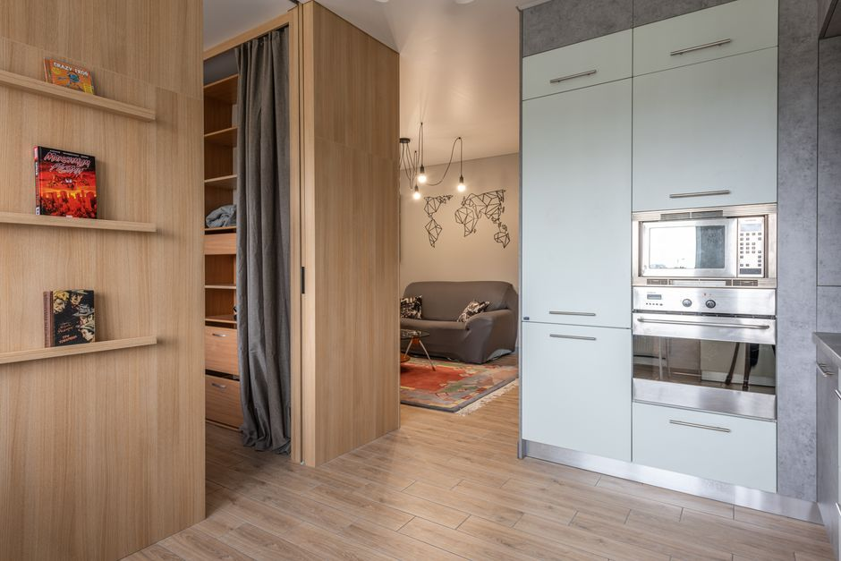

Hidden Storage Solutions Using Curtains: A Clever Space-Saving Hack

Photo: Max Vakhtbovych / Pexels
A curtain can hide shelves, a clothing rail or a stack of boxes and cost far less than doors or cabinets. It is a flexible solution for a small apartment, as long as you install it safely.
1. Choose what to hide
Curtains suit open shelves, a corner used as a closet, space under a desk or sink, or a rail of clothes. Do not use them to hide anything that needs ventilation or access, such as a furnace, water heater, electrical panel or fire exit.
2. Pick the right rod
Choose a rod rated for the weight of the curtain. For a rod mounted on the wall, use anchors suited to your wall type and, in drywall, fix into studs where possible. A tension rod is fine for light curtains in a narrow opening, but not for heavy ones.
3. Pick the right fabric
A medium-weight fabric hangs well and hides contents. Choose a washable fabric, and one that is labeled flame-resistant if it will hang near a source of heat.
4. Keep it away from heat
Never hang a curtain close to a stove, heater, radiator, space heater or candle. Curtains burn quickly.
5. Leave room to breathe
Do not store damp items behind a curtain, and leave a gap at the bottom or sides for air circulation to avoid mold.
6. Organize behind it
Use labeled bins, put heavy items low and keep frequently used items within easy reach. Store cleaning products and chemicals out of reach of children and pets.
7. Install safely
Use a stable step stool, not a chair. Before drilling, check for wires and pipes in the wall, and ask your landlord before making holes.
A curtain is a simple and inexpensive way to create hidden storage, and it works best with a bit of planning around safety and air flow.
Recommended products
As an Amazon Associate, I earn from qualifying purchases.